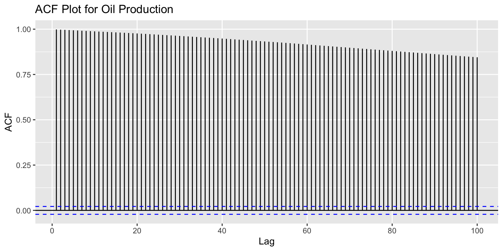
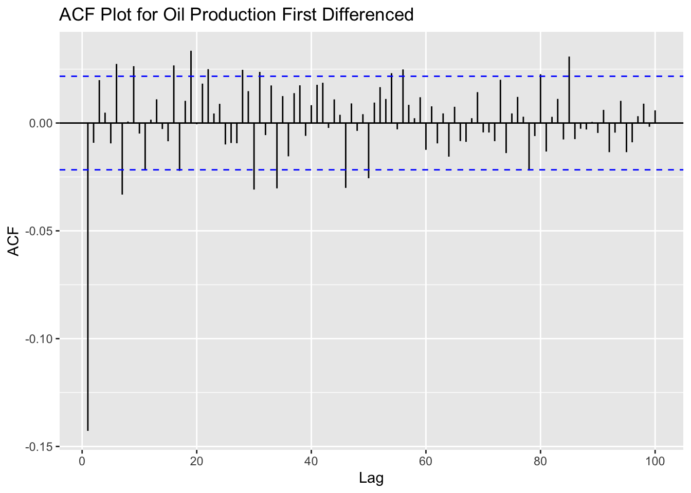
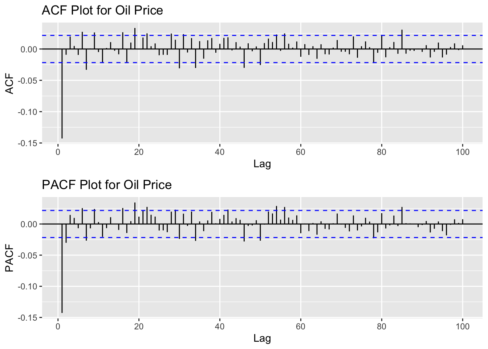
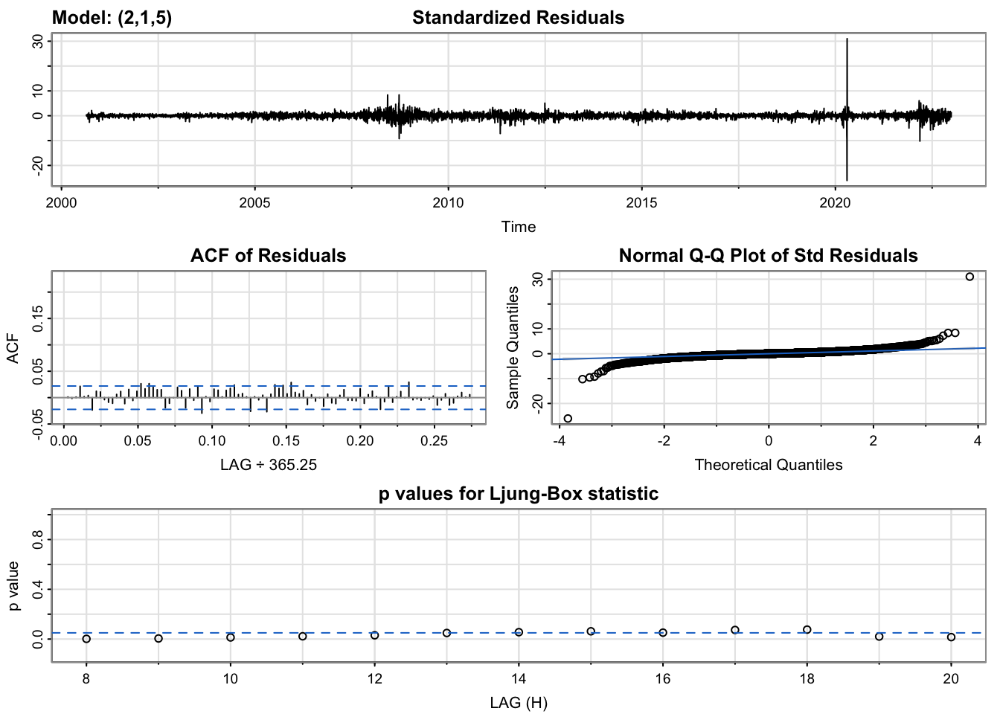
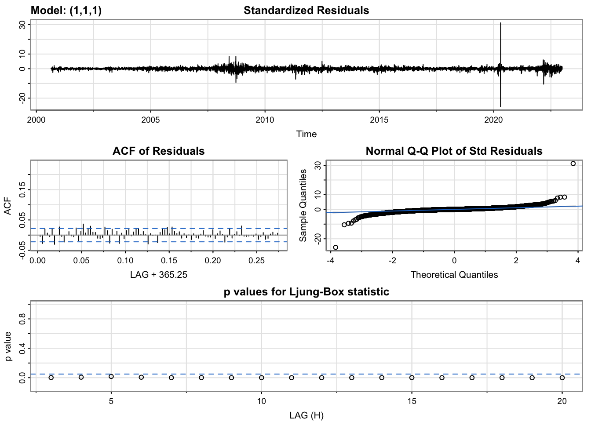
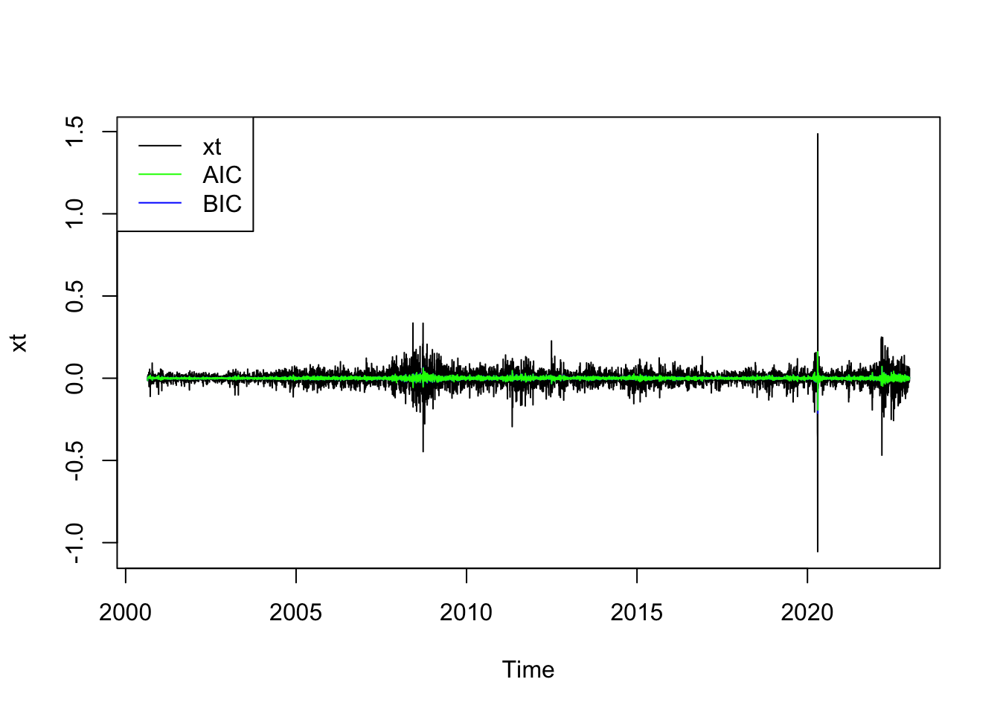
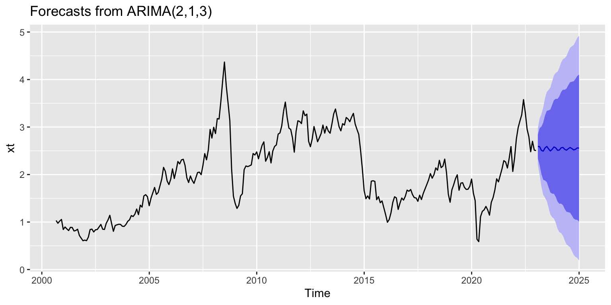

Crude Oil Price by Month
In this section…
Import the dataset from the EDA
The plot below shows the ACF plot.
Plot ACF
# Import dataset
ts_oil_price <- read_csv('../data/ts_oil_price_monthly.csv')
# Create time series
ts_oil_price<-ts(ts_oil_price$x,,star=decimal_date(as.Date("2000-08-31",format = "%Y-%m-%d")),frequency = 12)
# Resize plots
options(repr.plot.width = 5, repr.plot.height = 2)
# ACF Plot
acf_oil_price <- ggAcf(ts_oil_price, main="ACF Plot for Oil Production")
acf_oil_price
Augmented Dickey Fuller Test
Augmented Dickey-Fuller Test Code
# Augmented Dickey-Fuller Test calculation
test_oil_price <- adf.test(ts_oil_price)
# Print results
print(test_oil_price)
Augmented Dickey-Fuller Test
data: ts_oil_price
Dickey-Fuller = -2.3977, Lag order = 6, p-value = 0.4084
alternative hypothesis: stationaryDefine if its stationary. Compare ACF to Augmented Dickey Fuller Test
Differencing Code
options(repr.plot.width = 6, repr.plot.height = 6)
# ACF Differenced Plot
acf_diff_oil_price <- ggAcf(diff(ts_oil_price), main="ACF Plot for Oil Production First Differenced")
# Show plot
acf_diff_oil_price
Describe the ACF plot above.
Compare to the Augmented Dickey-Fuller Test below.
Augmented Dickey-Fuller Test Code
# Save differenced time series
diff_oil_price <- diff(ts_oil_price)
# Augmented Dickey-Fuller Test calculation
test_diff_oil_price <- adf.test(diff_oil_price)
# Print results
print(test_diff_oil_price)
Augmented Dickey-Fuller Test
data: diff_oil_price
Dickey-Fuller = -7.1212, Lag order = 6, p-value = 0.01
alternative hypothesis: stationaryKeep the differenced ts because its stationary.
ACF and PACF Plot Code
# Resize plots
options(repr.plot.width = 5, repr.plot.height = 2)
# ACF Plot
acf_oil_price <- ggAcf(diff_oil_price, 100, main="ACF Plot for Oil Price")
# PACF Plot
pacf_oil_price <- ggPacf(diff_oil_price, 100, main="PACF Plot for Oil Price")
# Arrange Plots
grid.arrange(acf_oil_price, pacf_oil_price, nrow=2)
Based on the values obtained before, we assess the best p,d,q below
Model Parameter Assesing
# Assigned time series to variable used in the algorithm
xt <- ts_oil_price
# PACF plot parameter selection
p_value <- 5
# Number of differences
d_value <- 1
# ACF plot parameter selection
q_value <- 6
# Initialize variable
i <- 1
# Initialize variable
temp <- data.frame()
# Calculate number of rows
rows <- p_value*d_value*q_value
#
ls <- matrix(rep(NA,6*rows),nrow=rows)
# Parameter testing loop
for (p in 1:p_value+1)
{
for(q in 1:q_value+1)
{
for(d in 1:d_value)
{
#if(p-1+d+q-1<=8) #usual threshold
#{
model<- Arima(xt,order=c(p-1,d,q-1),include.drift=TRUE)
ls[i,]= c(p-1,d,q-1,model$aic,model$bic,model$aicc)
i=i+1
#print(i)
#}
}
}
}
temp <- as.data.frame(ls)
names(temp) <- c("p","d","q","AIC","BIC","AICc")
#temp
knitr::kable(temp)| p | d | q | AIC | BIC | AICc |
|---|---|---|---|---|---|
| 1 | 1 | 1 | -103.53271 | -89.16876 | -103.38061 |
| 1 | 1 | 2 | -101.53513 | -83.58020 | -101.30612 |
| 1 | 1 | 3 | -99.61755 | -78.07163 | -99.29571 |
| 1 | 1 | 4 | -102.76543 | -77.62852 | -102.33466 |
| 1 | 1 | 5 | -102.37028 | -73.64239 | -101.81430 |
| 1 | 1 | 6 | -100.37805 | -68.05917 | -99.68038 |
| 2 | 1 | 1 | -101.53237 | -83.57744 | -101.30337 |
| 2 | 1 | 2 | -99.53435 | -77.98842 | -99.21251 |
| 2 | 1 | 3 | -107.12332 | -81.98642 | -106.69256 |
| 2 | 1 | 4 | -105.45152 | -76.72362 | -104.89553 |
| 2 | 1 | 5 | -100.38438 | -68.06550 | -99.68671 |
| 2 | 1 | 6 | -98.37179 | -62.46192 | -97.51576 |
| 3 | 1 | 1 | -101.29015 | -79.74422 | -100.96831 |
| 3 | 1 | 2 | -101.15402 | -76.01712 | -100.72326 |
| 3 | 1 | 3 | -105.37080 | -76.64290 | -104.81481 |
| 3 | 1 | 4 | -101.53855 | -69.21967 | -100.84088 |
| 3 | 1 | 5 | -98.43894 | -62.52907 | -97.58291 |
| 3 | 1 | 6 | -96.45739 | -56.95653 | -95.42614 |
| 4 | 1 | 1 | -103.50725 | -78.37034 | -103.07648 |
| 4 | 1 | 2 | -101.53545 | -72.80756 | -100.97947 |
| 4 | 1 | 3 | -105.26589 | -72.94701 | -104.56822 |
| 4 | 1 | 4 | -100.76278 | -64.85291 | -99.90675 |
| 4 | 1 | 5 | -98.78945 | -59.28859 | -97.75820 |
| 4 | 1 | 6 | -101.35005 | -58.25820 | -100.12652 |
| 5 | 1 | 1 | -101.60668 | -72.87878 | -101.05069 |
| 5 | 1 | 2 | -99.94657 | -67.62768 | -99.24889 |
| 5 | 1 | 3 | -98.03664 | -62.12677 | -97.18061 |
| 5 | 1 | 4 | -106.43841 | -66.93755 | -105.40716 |
| 5 | 1 | 5 | -98.95301 | -55.86117 | -97.72948 |
| 5 | 1 | 6 | -97.28999 | -50.60716 | -95.85692 |
Model Selection
Model Selection
# Check best model with AIC
temp[which.min(temp$AIC),] p d q AIC BIC AICc
9 2 1 3 -107.1233 -81.98642 -106.6926Model Selection
# Check best model with BIC
temp[which.min(temp$BIC),] p d q AIC BIC AICc
1 1 1 1 -103.5327 -89.16876 -103.3806Model Selection
# Check best model with AICc
temp[which.min(temp$AICc),] p d q AIC BIC AICc
9 2 1 3 -107.1233 -81.98642 -106.6926Model Diagnostics
Model Diagnostics - parameters with best AIC
AIC <- temp[which.min(temp$AIC),]
p1 <- AIC$p
d1 <- AIC$d
q1 <- AIC$q
# Model diagnostics for best AIC
model_output <- capture.output(sarima(xt, p1, d1, q1))
Describe model diagnostics
Model Diagnostics - parameters with best BIC
BIC <- temp[which.min(temp$BIC),]
p2 <- BIC$p
d2 <- BIC$d
q2 <- BIC$q
# Model diagnostics for best BIC
model_output <- capture.output(sarima(xt, p2, d2, q2))
Describe model diagnostics
Fit ARIMA model using Arima()
Model Fitting
best_model <- temp[which.min(temp$AIC),]
p <- best_model$p
d <- best_model$d
q <- best_model$q
model <- Arima(xt,order=c(p, d, q),include.drift = TRUE)
plot(xt, col="black")
lines(fitted(model), col="green")
legend(x = "topleft", legend = c("xt", "AIC"), col = c("black", "green"), lty = 1)
Compare fitted vs Actual plots
Fitted Model Summary
fit <- Arima(xt, order=c(p, d, q))
summary(fit)Series: xt
ARIMA(2,1,3)
Coefficients:
ar1 ar2 ma1 ma2 ma3
0.2652 -0.9097 -0.0610 0.9171 0.2591
s.e. 0.0343 0.0297 0.0636 0.0255 0.0618
sigma^2 = 0.03738: log likelihood = 60.49
AIC=-108.98 AICc=-108.66 BIC=-87.43
Training set error measures:
ME RMSE MAE MPE MAPE MASE
Training set 0.004370332 0.1911687 0.143212 -0.1676065 7.835146 0.2608363
ACF1
Training set 0.008321852Model Equation with Latex
\[\begin{align} x_t &= \Phi x_{t-1} + w_t + \Theta w_{t-1} \\ <!-- x_t &= 0.1832 x_{t-1} - 0.6324 x_{t-2} + w_t - 0.4982 w_{t-1} --> \end{align}\]
auto.arima()
auto.arima(xt)Series: xt
ARIMA(0,1,1)
Coefficients:
ma1
0.2150
s.e. 0.0578
sigma^2 = 0.03883: log likelihood = 55.52
AIC=-107.05 AICc=-107 BIC=-99.86Compare selected model to auto.arima()
Forecast
forecast_fit <- forecast(fit,24)
forecast_fit Point Forecast Lo 80 Hi 80 Lo 95 Hi 95
2023.081 2.591672 2.343086 2.840258 2.2114923 2.971852
2023.164 2.586552 2.197233 2.975872 1.9911399 3.181965
2023.247 2.508423 2.008621 3.008225 1.7440422 3.272804
2023.331 2.492360 1.890880 3.093840 1.5724752 3.412245
2023.414 2.559176 1.874218 3.244135 1.5116226 3.606730
2023.497 2.591510 1.841074 3.341946 1.4438174 3.739203
2023.581 2.539301 1.728395 3.350207 1.2991268 3.779474
2023.664 2.496039 1.621804 3.370274 1.1590123 3.833065
2023.747 2.532062 1.597196 3.466928 1.1023081 3.961816
2023.831 2.580972 1.594549 3.567395 1.0723689 4.089575
2023.914 2.561172 1.528300 3.594045 0.9815306 4.140814
2023.997 2.511426 1.430418 3.592434 0.8581674 4.164685
2024.081 2.516245 1.385969 3.646521 0.7876374 4.244853
2024.164 2.562779 1.387687 3.737871 0.7656309 4.359927
2024.247 2.570736 1.355682 3.785791 0.7124707 4.429002
2024.331 2.530513 1.275633 3.785394 0.6113394 4.449687
2024.414 2.512607 1.216046 3.809168 0.5296886 4.495525
2024.497 2.544450 1.207717 3.881183 0.5000927 4.588807
2024.581 2.569185 1.196142 3.942229 0.4692962 4.669074
2024.664 2.546777 1.138867 3.954687 0.3935640 4.699989
2024.747 2.518331 1.074223 3.962440 0.3097580 4.726905
2024.831 2.531173 1.050721 4.011625 0.2670165 4.795329
2024.914 2.560456 1.046184 4.074728 0.2445771 4.876335
2024.997 2.556540 1.010481 4.102599 0.1920467 4.921034Forecast Plot
# Path to save plot
file_path <- "../images/6_2_oil_price.png"
# Plot
plot <- autoplot(forecast_fit)
# Use ggsave to save the plot as a PNG image
ggsave(plot, filename = file_path, width = 10, height = 5)
# Show plot
plot
Conclusion